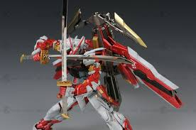

Review - MG 1/100 Gundam Astray Red Frame Kai [Slightly Painted]
Bandai

Hye! Welcome back again after a month of hiatus. LOL. Well, that is because I'm too lazy to do Gunpla News
(I'm not that kind of blogger) and actually I don't have any materials to post.
Nevertheless, this is my 1st kit of this year, MG 1/100 Gundam Astray Red Frame Kai.
Actually, I did want to retire from Gunpla but the temptation, I just can't resist it.
Previously, I owned a NG 1/100 Gundam Astray Red Frame but I gave it to someone else as I just want to get rid my NG collections and upgrade them to MG version.
Piloted by Lowe Guele of Junk Guild, this Astray variant is based on MBF-P02 Gundam Astray Red Frame.
This Gundam are basically an upgrade from previous version after Lowe was defeated by Librarian Works in graphic novel Seed Vs Astray.
(which produced a lot of NG version of weird variant of SEED Gundam, etc Gale Strike)
Long story short, lets go for the review, shall we?
First Look

What special about Astray is that the minimal use of Phase Shift Armor to conserve energy.
This is why Astray developed a muscular look and Lowe Guele took this vision forward by incorporating Gerbera Straight into its armament.
You've might not noticed but I do paint some parts with Pale Grey to give it a more Real Grade looks. (Damn why I'm so obsessed with RG LOL)
Articulation

This kit has good articulation, BUT the shoulder joint is too weak! Seriously, it is too weak!
You can put some glue onto the joint to make it tighter (well I don't do that since it is difficult to disassemble the body back).
The kneeling position is also good.
Armament

For this badass Gundam, it only need:
x1 Tactical Arms IIL
x1 Gerbera Straight
x1 Tiger Pierce
and thats it. Swords only! However, the Tactical Arms is superbly multifunctional.
Completed Model
V-FORM

Delta Form

Flight Form

Bow Form

Blade Form

Conclusion
I can say if you a big fan of BIG sword, you can go for it. As for the overall design, one might not like it since the shoulder joints is too weak,
I don't know why Bandai design them like that!
And this might be my mistake, but I think that the hip joint can easily break if you handle it properly.
My advice is that you should move it quite a bit too loosen it a little bit just to ensure that it can follow your pose that you've intended to do.
Ada Apa Dengan Cinta
Cipt
Perempuan datang atas nama cinta
Bunda pergi karena cinta
Digenangi air racun jingga adalah wajahmu
Seperti bulan lelap tidur dihatimu
Yang berdinding kelam dan kedinginan
Ada apa dengannya
Meninggalkan hati untuk dicaci
Baru sekali ini aku melihat karya surga dalam mata seorang hawa
Ada apa dengan cinta
Tapi aku pasti akan kembali
Dalam satu purnama
Untuk mempertanyakan kembali cintanya
Bukan untuknya
Bukan untuk siapa
Tapi untukku
Karena aku ingin kamu
Itu saja
Sejarah Singkat Perang Dunia II
Perang Dunia II, atau Perang Dunia Kedua (biasa disingkat PDII) adalah konflik militer global yang terjadi pada 1 September 1939 sampai 2 September 1945 yang melibatkan sebagian besar negara di dunia, termasuk semua kekuatan-kekuatan besar yang dibagi menjadi dua aliansi militer yang berlawanan: Sekutu dan Poros. Perang ini merupakan perang terbesar sepanjang sejarah dengan lebih dari 100 juta personil.
Dalam keadaan "perang total," pihak yang terlibat mengerahkan seluruh bidang ekonomi, industri, dan kemampuan ilmiah untuk melayani usaha perang, menghapus perbedaan antara sipil dan sumber-sumber militer. Lebih dari tujuh puluh juta orang, mayoritas warga sipil, tewas. Hal ini menjadikan Perang Dunia II sebagai konflik paling mematikan dalam sejarah manusia.
Umumnya dapat dikatakan bahwa peperangan dimulai saat Jerman menginvasi Polandia pada tanggal 1 September 1939, dan berakhir pada tanggal 14 Agustus 1945 pada saat Jepang menyerah kepada tentara Amerika Serikat.
Secara resmi PD II berakhir ketika Jepang menandatangani dokumen Japanese Instrument of Surrender di atas kapal USS Missouri pada tanggal 2 September 1945, 6 tahun setelah perang dimulai. Perang Dunia II berkecamuk di tiga benua tua; yaitu Afrika, Asia dan Eropa.